Klickbara prototyper, 402 × 874 pt. Öppna en skärm i ett brett fönster för anteckningar och haptiklogg till höger. Tangenter: s säkra ytor, t ljust/mörkt, g glas av.
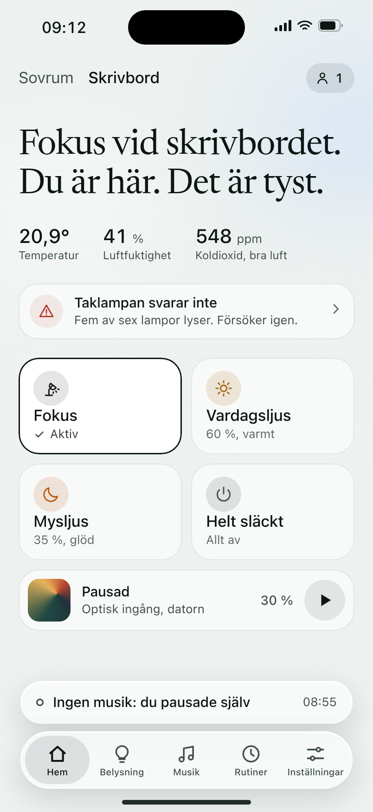
HemDag, ljust, ett fel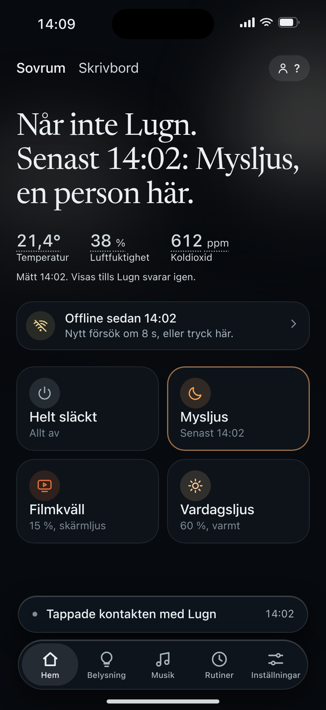
OfflineInaktuellt läge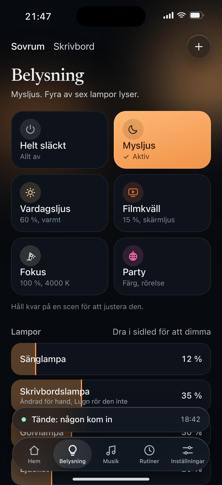
BelysningScener och lampor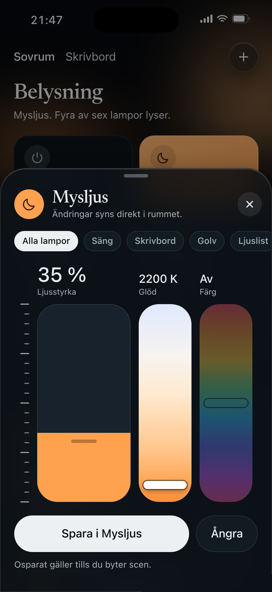
Belysning, hållTre reglage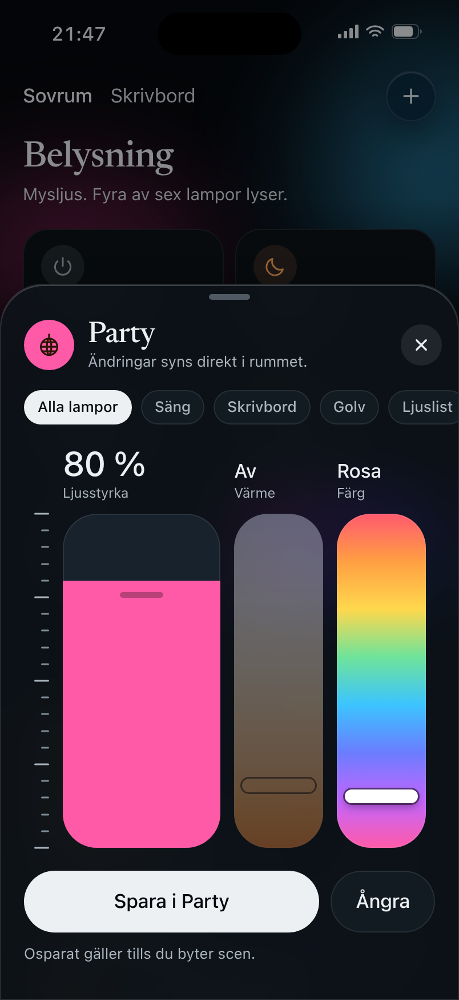
Belysning, färgParty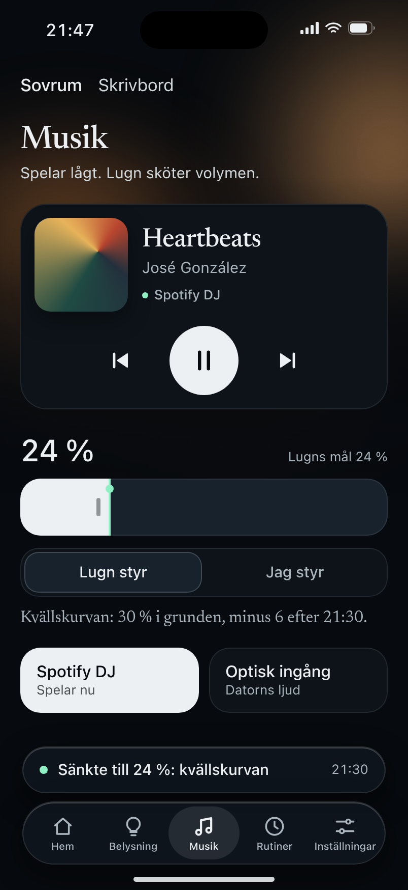
MusikVem styr volymen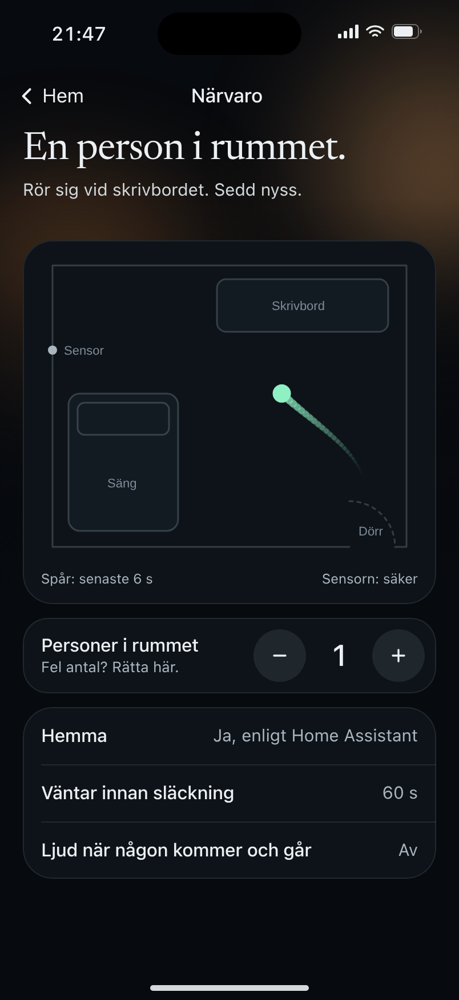
NärvaroRörelse med spår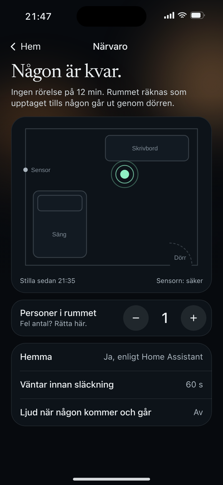
NärvaroNågon är kvar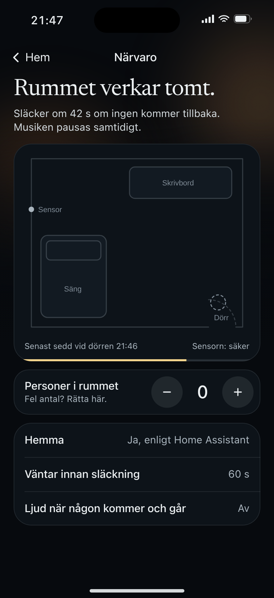
NärvaroVerkar tomt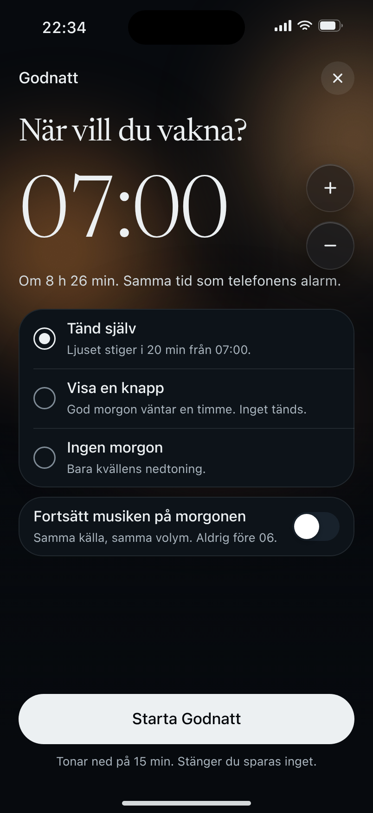
GodnattNär vill du vakna?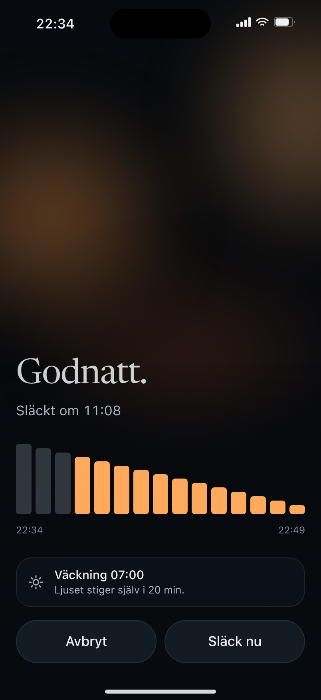
GodnattNedtoning, 15 min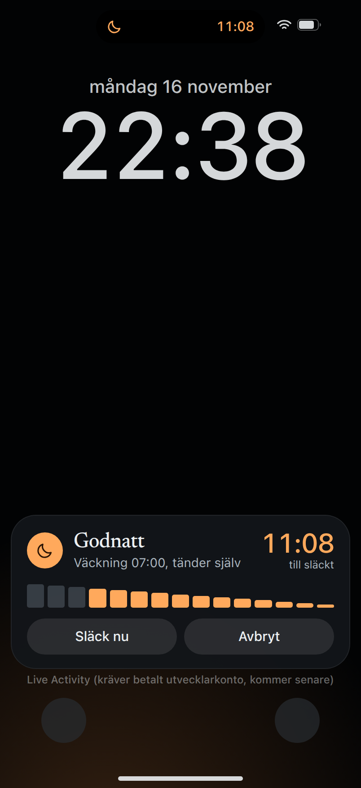
LåsskärmLive Activity, senare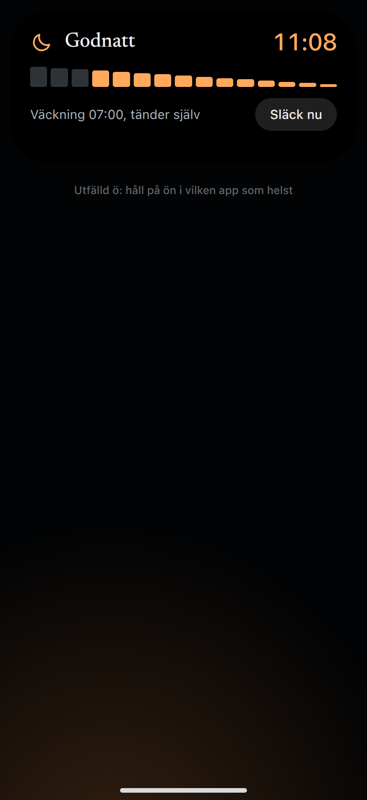
Dynamic IslandUtfälld, senare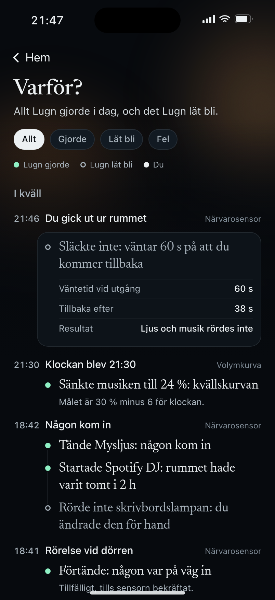
Varför?Tidslinje efter orsak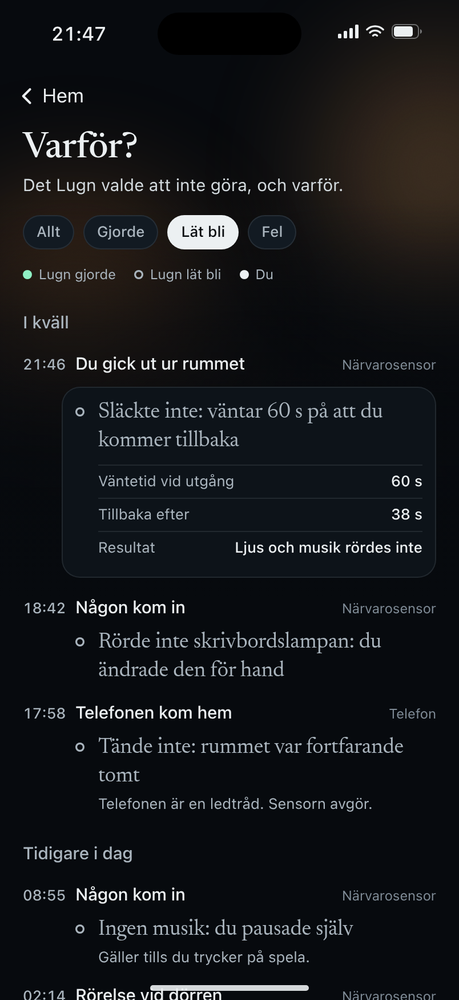
Varför?Det Lugn lät bli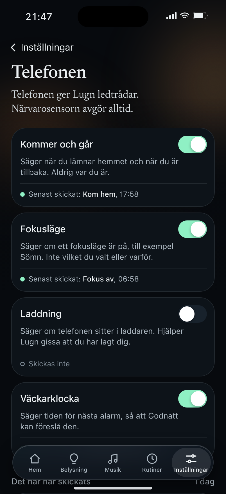
TelefonenInställningar, signaler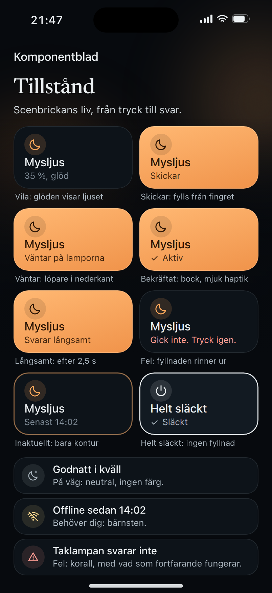
TillståndKomponentblad, mörkt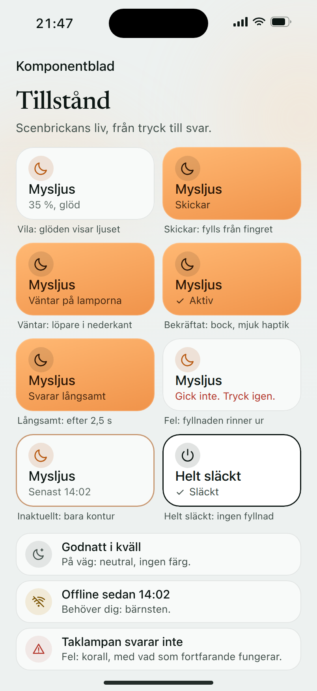
TillståndKomponentblad, ljust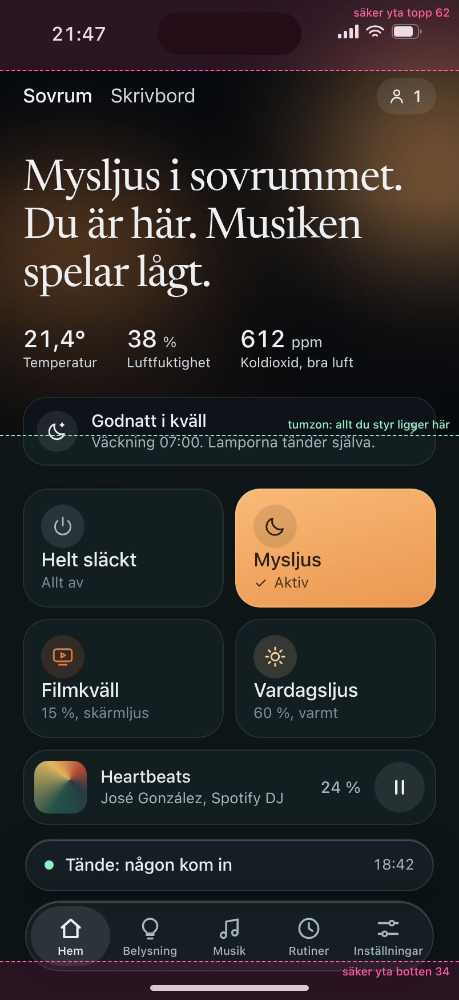
Säkra ytorInsatser och tumzon